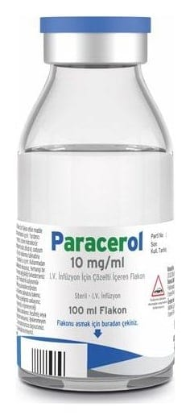

Paracerol 10 mg/ml IV İnfüzyon İçin Çözelti İçeren Flakon, 12 Flakon

Ne için kullanılır
KT · Bölüm 1• PARACEROL her 1 mL çözeltide 10 mg parasetamol içerir. • PARACEROL 12 flakonluk ambalaj içerisinde kullanıma sunulan renksiz veya açık sarımtırak berrak çözeltidir. • PARACEROL, analjezik (ağrı kesici) ve antipiretikler (ateş düşürücü) olarak adlandırılan bir ilaç grubuna dahildir. • PARACEROL 100 mL’lik flakon; yetişkinler, adolesanlar ve 33 kg’ın üzerindeki çocuklarda kullanılır. • PARACEROL ağrının ya da ateşin tedavisinde damar içine uygulamanın klinik olarak gerekli görüldüğü acil durumlarda ve/veya diğer uygulama yollarının mümkün olmadığı durumlarda (özellikle cerrahi girişimden sonra, orta şiddette ağrının ve ateşin kısa süreli tedavisinde) kullanılır.